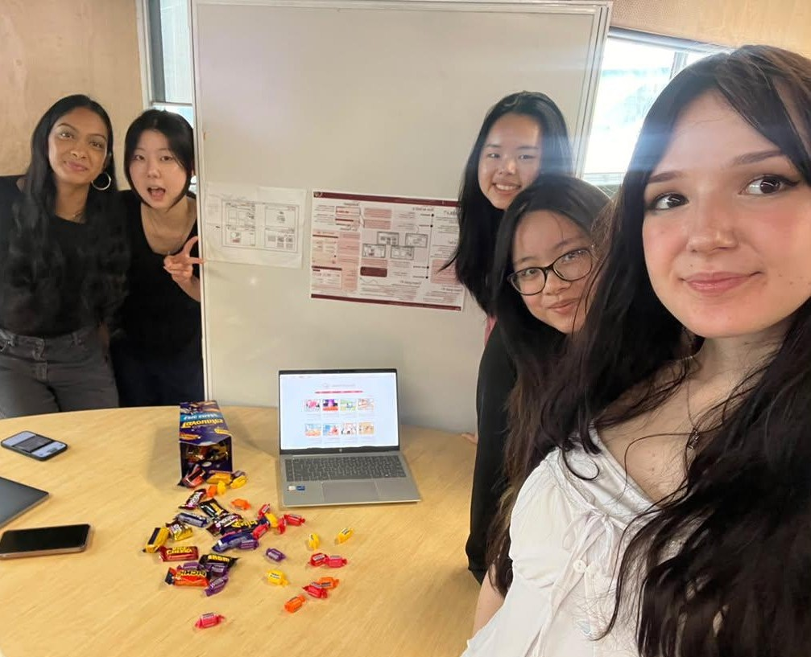

About us
MIKA² helps people who feel disconnected find their way back to others, one small Brisbane event at a time.
Making friends can be hard, and it’s harder when you’re not sure where to start. A packed festival or a big networking night can feel like too much, so many people stay home instead.
MIKA² is built for that moment. We bring together smaller, quieter and more niche events around Brisbane, like workshops, classes, exhibitions and local gigs, where it’s easier to start a conversation and see the same faces again. Each one is a low-pressure step toward the connections you’re looking for.
Our Team
We're a group of five students from the University of Queensland who knows how hard it can be to take the first step toward meeting new people. We built MIKA² to make that step feel smaller, and bit less intimidating.

AI declaration
We used generative AI while building this site, and we want to be clear about where. Below you can see which tool we used, what it did, and what we did ourselves.
- Tool
- Claude, made by Anthropic, used through the claude.ai chat
- Used for
- Writing and fixing code, and drawing design mock-ups
Where we used AI
Our responsibility
We are responsible for any mistakes regarded in AI generated content, as AI can make mistakes. We are confident that our content is our own, through carefully checking over our work, whether it was generated by AI or not. AI generated content were clearly marked in our project, and reviewed by our group to ensure it is our work and not plagiarised.
Where the events come from
Event details come from Brisbane City Council's open data at data.brisbane.qld.gov.au. Brisbane Open datasets were connected through API calls, and the data was processed and displayed on this site by our group.
Declaration last updated: October 2026
References
@Arosemaxfield. (n.d.). Record Player Doodling [Pinterest pin]. Pinterest. https://au.pinterest.com/pin/705868941645398551/
Bertelli, M. (2023). A thoughtful display of diverse photographs in a well-lit gallery exhibit.Pexel. https://www.pexels.com/photo/series-of-photographies-on-exhibition-15138864/
Danilyuk, P. (2021). Three women engaged in a lively art workshop surrounded by colorful drawings and materials. Pexel. https://www.pexels.com/photo/woman-in-white-long-sleeve-shirt-sitting-beside-woman-in-white-long-sleeve-shirt-6925368/
RDNE Stock project. (2021, June 3). A woman singing while holding a violin · free stock photo. Pexels. https://www.pexels.com/photo/a-woman-singing-while-holding-a-violin-8198153/
Tiwari, s. (2025). API Handling in JavaScript & React: From Basics to Pro-Level. Dev Community.https://dev.to/shubhamtiwari909/mastering-api-handling-in-javascript-react-a-completeguide-45kk